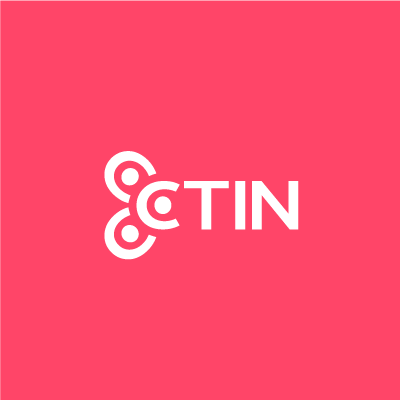

CTIN Centro de Tecnología e Innovación
-
Puesto: Becario de Analista de Negocios
- Duración: 1 año
-
Actividades: Creación de historias de
usuario, analisis de requerimientos funcionales y no
funcionales, creación de documentación de insidencias
BIZZARRO
- Puesto: Analista de Negocios
- Duración: Actual
-
Actividades: Levantamiento de
requerimientos de Sotfware para el área de finanzas,
tesorería y recursos humanos, creación de POWS e historias
de usuario